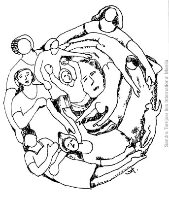

پذيرش > تریبون > مقالات > هم گرایی یا هم آهنگی؟(*)


 هم گرایی یا هم آهنگی؟(*) هم گرایی یا هم آهنگی؟(*)
18 آذر 1385 - لاله حسین پور - نسخه قابل چاپ
سئوال، مربوط به کمپین تغییر برای برابری است. که آیا این کمپین به قصد هم گرایی میان گروه های مختلف فعالین جنبش زنان، طراحی شده است؟
سئوال را می توان طور دیگری نیز پرسید. آیا هدف، نزدیک شدن به هم تا مرحله یکی شدن است؟ یا جهت و حرکات را هم ساز کردن؟
آیا جنبش زنان، خسته از واگرایی های و اختلافات، به فکر یک مخرج مشترک افتاده و ایده ای را ابداع کرده تا "همه با هم" را متحقق کند؟ اگر هم، چنین بوده باشد، اثر و بازده کمپین تغییر برای برابری، دارای کیفیت دیگری است.
طرح این کمپین، به محض تولد، از مرز تنها جمع آوری امضاء گذشته است و به تلاشی جهت احقاق برابری تبدیل شده است. به تغییر فکر می کند، رفع تبعیض را خواهان است و به اعماق نشانه رفته است.
اما این، واقعیتی انکارناپذیر است که افسون "همه با هم" دست از ما برنمی دارد. هنوز باور نکرده ایم که همه را نمی توان با هم یکی کرد. هنوز نمی دانیم که تفاوت ها و داشتن اختلاف، ضعف ما نیست. و نمی دانیم که چگونه تفاوت ها را کنار هم بنشانیم و با هم آشتی دهیم.
هنوز عده ای برای جنبش زنان کف می زنند به گمان این که طرحی را مطرح کرده که هم گرایی ها را تقویت می کند و واگرایی ها را لاپوشانی. و از بروز واگرایی در آینده جنبش زنان هراسانند.
آیا این واگرایی، واقعیتی موجود است یا خیر؟ اگر هست، پس باید یاد بگیریم که آن ها را ببنییم و بپذیریم و با وجود آن ها حرکت کنیم. یاد بگیریم که از واگرایی ها نترسیم، آن ها را به رسمیت بشناسیم و به جای این که برای هم گرایی های مصنوعی و مقطعی هورا بکشیم، واگرایی ها را با هم هم آهنگ کنیم. برای هم آهنگی بجنگیم و واگرایی ها را هر چه روشن تر و گویاتر نشان دهیم.
کمی واقعی تر نگاه کنیم. حتی اگر یک میلیون امضاء جمع آوری شد، تا چند درصد امکان تقبل آن از سوی مجلس وجود دارد؟ و گیریم که قوانین عوض شد، تا چند درصد امکان تحقق آن در جامعه وجود دارد؟ و اگر حتی این قوانین اجراء شدند، آیا می توانند ضربه ای واقعی و جدی بر تبعیض جنسی وارد آورند؟ هرکس می تواند پاسخ را به میل خود ارائه دهد، اما اشتباه است اگر تصور کنیم که نارسایی در قوانین، منشاء و سرآغاز تبعیض های موجود در جامعه است. اشتباه بسیار بزرگ تری است، اگر ندانیم که قوانین را بر اساس تبعیض های موجود در جامعه می سازند و به تصویب می رسانند و نه برعکس. منشاء و سرآغاز هرگونه تبعیض، بهره کشی است. قانون، این بهره کشی را مدلل و موجه می سازد. به آن شکل و ساختار و سازمان می دهد و انسان را تابع آن می کند. با تعویض قانون، شکل و شیوه بهره کشی و در نتیجه تبعیض را می توان تغییر داد، اما برای نابودی تبعیض باید با بهره کشی جنگید. کمپین تغییر برای برابری مسیر دشواری پیش رو دارد و نمی تواند تنها با هدف تغییر قوانین به هدف رسیده و وظیفه اش را به پایان رساند.
این کمپین یک تاکتیک است و حقا که تاکتیک درستی است. زمانی برآن متصور نیست که برخی، بعد از مدتی اعلام کنند که کمپین موفق شده یا شکست خورده است. ادامه کاری کمپین، موفقیت آن را تضمین می کند و توقف آن، شکست آن است. اگر کمپین ادامه یابد، موفقیت، هم زاد آن است. کمپین در هر لحظه حرکت خود به موفقیتی تازه دست می یابد.
جنبش زنان نیازی ندارد، به هم گرایی تظاهر کند. تفاوت و اختلاف در ذات هر جنبشی نهفته است. نباید با نادیده گرفتن اختلافات، همه زنان را در کنار هم قرار دهیم. و از انفجار اختلافات سرپوش گذاشته شده، در فردای هر حرکت متحدی برخود بلرزیم. هم گرایی و واگرایی دو روی یک سکه اند و هر دو در یک پدیده وجود داشته و عمل می کنند. وقتی از هم گرایی صحبت می کنیم، بنابراین می پذیریم که واگرایی وجود دارد و چرا نه.
سرنوشتی که طی 30سال اخیر، در تک تک احزاب و سازمان های سیاسی شاهد آن بودیم و هستیم، هم چنان ما را در احاطه خود گرفته است. یک هم گرایی ارادی و مصنوعی، با تبدیل انسان ها به ماشین های پیش برنده یک اراده واحد که دیر یا زود از هم پاشیده شده و مجددا به شکل دیگری سر در آورده و می آورد. چنین عمل کردی، کلیت جامعه ما را تحت سیطره خود داشته و هنوز نگرش غالب به شمار می رود.
اگر در جنبش زنان گسست وجود داشته و دارد، مگر می توان با توسل به یک طومار (برخی ظاهرا این کمپین را با یک طومار برابر می بینند) که مورد توافق همگان باشد، این گسست را از میان برداشت؟ مسلم است که اگر هدف این کمپین رفع گسست باشد، از هم اکنون می توان به شکست آن اقرار کرد. اگر این کمپین یک "هم گرایی پای دار" نامیده می شود و قصد آن برقراری وحدت میان کنش گران جنبش زنان است و می خواهد اختلافات و تفاوت های گروه های مختلف فعالین حقوق زنان را پنهان کند، از هم اکنون می توان به آن پشت کرد.
اما تاریخ نشان داده است که گسست ها را نمی توان برای طولانی مدت لاپوشانی کرد. این گسست ها مثل کوه آتش فشان می مانند و هر چه پوشیده تر شوند، آمادگی انفجار دهشتناک تری دارند. بگذار به جای انفجار، از این گسست ها، صدها گل بشکفند و هر یک عطر خود را بیافشانند و جامعه را گل باران کنند. کمپین تغییر برای برابری هدفی جز گل باران کردن جنبش زنان ندارد. (فارغ از این که طراحان اصلی چه قصدی داشته اند: گذاشتن سرپوش بر آتش فشان گسست ها، یا ریشه دواندن در اعماق و در گستره؟)
در کمپین یک میلیون امضاء و تغییر برای برابری، من به امضاء ها فکر نمی کنم. من به مجلس و قانون فکر نمی کنم. من به فریاد زنان فکر می کنم. من به زنان کرجی، زنجانی، گرگانی، تهرانی و همدانی فکر می کنم. وقتی گزارش یزد را می خوانم و عکس ها را می بینیم، دیگر به تغییر قوانین که چه بدون تغییر و چه با تغییر در چهارچوب کنونی تنها بر روی کاغذ سیاه شده اند، فکر نمی کنم، من به آن زن یزدی که جزوه را می گیرد تا خود تبدیل به جنبش شود، فکر می کنم.
من به هم گرایی جنبش زنان فکر نمی کنم، من به جنبشی که می رود تا ریشه هایش را بگستراند، فکر می کنم. این کمپین، وقتی از جلسات بحث و سمینارها وارد خانه ها می شود، خود جنبش ساز است.
چه بسا پس از مدتی، اختلافات و واگرایی های سرکوب شده و پنهان شده در بخشی از فعالین حقوق زنان، بار دیگر سر درآورند، اما چه باک، جنبش در دستان آن زن همدانی موج می خورد و آن دیگری، آن زن گرگانی، جنبش را بر دوش خود می برد!
(*) این مطلب را پس از خواندن مقاله "کمپین تغییر برای برابری، یک الگوی هم گرایی" نوشته ایمان مظفری، تهیه کردم.
ارسال به
بالاترین
،
توییتر
،
فریندفید
،
فیسبوک
در همين بخش :
 دهمین دورۀ مراسم تندیس صدیقه دولت آبادی ۱۳۹۲ دهمین دورۀ مراسم تندیس صدیقه دولت آبادی ۱۳۹۲
کارت پستالهایی به بهانهی هشت مارس و به یاد همهی مبارزین راه برابری
بیانیه بیش از 350 تن از مدافعان حقوق زنان به مناسبت روز جهانی زن؛ زنان هر روز فرودستتر میشوند
لباسی که برای تن ما دوخته اند! /اعظم بهرامی
چالشها و چشمانداز فعالیت مدنی زنان
ديگر بخش ها :
طرح یک میلیون امضا
|
مقالات
|
سایت نوشته ها
|
اخبار
|
گزارش كمپين
|
گفت و گو
|
علیه سکوت
|
كوچه به كوچه
|
نامه های شما
|
گزارش ویژه
|
گفتگو با اعضا
|
ویژه سالگرد کمپین
|
تصویر برابری
|
دل آرام علی
|
تریبون
|
مقالات
|
تاریخ شفاهی
|
خارج از چارچوب
|
کتابخانه
|
درباره کمپین
|
کمپین در شهرها
|
کمپین در بند
|
صدای تغییر
|
ویژه 22 خرداد
|
لایحه حمایت از خانواده
|
گالری
|
عشا مومنی
|
امیر یعقوبعلی
|
خدیجه مقدم
|
راحله عسگری زاده و نسیم خسروی
|
پروین اردلان،جلوه جواهری، مریم حسین خواه، ناهید کشاورز
|
زینب پیغمبرزاده
|
سعیده امین، سارا ایمانیان، محبوبه حسین زاده، ناهید کشاورز و همایون نامی
|
احترام شادفر
|
نسیم سرابندی زاده،فاطمه دهدشتی
|
وبلاگ مهمان
|
پرونده خرم آباد
|
دستگیری ها
|
مریم مالک
|
پرستو اللهیاری
|
مهرنوش اعتمادی
|
سمیه رشیدی
|
Other Languages
|
همراهان
|
«فراخوان کمپین ده روز با بهاره هدایت»
| English
|